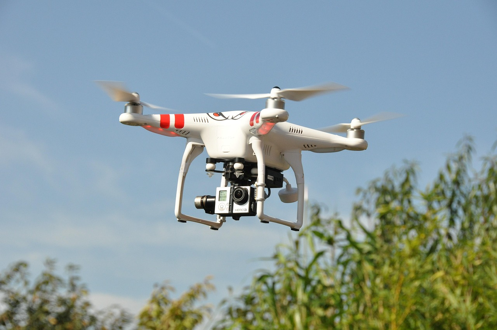
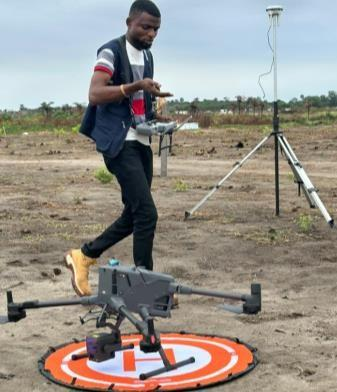
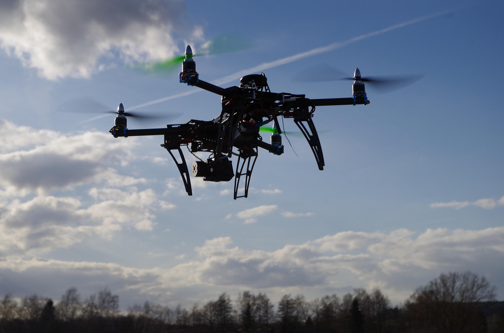
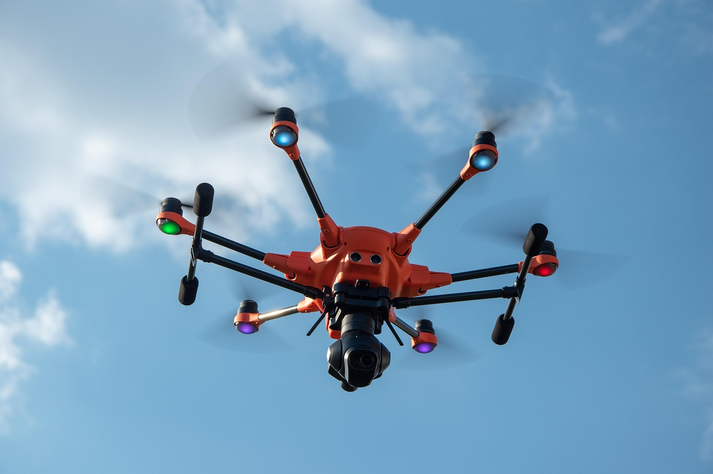

Nos Services
Chez ELK’S CONSTRUCT SARL, nous mettons à votre disposition une gamme complète de services couvrant la construction, l’ingénierie, la topographie et la géomatique, ainsi que des solutions innovantes en inspection, urbanisation et développement de matériaux. Grâce à notre expertise pluridisciplinaire et à l’utilisation de technologies modernes, nous offrons à nos clients des projets sur mesure qui allient qualité, durabilité et innovation. Notre objectif est de bâtir des infrastructures solides et durables qui répondent aux besoins actuels tout en préparant l’avenir de nos communautés.
Construction & Génie Civil
Nous réalisons des travaux de construction variés allant des bâtiments résidentiels et commerciaux aux infrastructures publiques telles que routes, ponts et systèmes de drainage. Grâce à l’utilisation de matériaux de haute qualité et de techniques modernes, nous garantissons des ouvrages solides, sécurisés et adaptés au contexte local. Notre expertise couvre également la réhabilitation et la modernisation des structures existantes afin de prolonger leur durée de vie et de répondre aux normes internationales.

Ingénierie & Architecture
Notre équipe d’ingénieurs et d’architectes propose des conceptions sur mesure qui allient innovation, fonctionnalité et esthétique. De l’étude initiale à la réalisation, nous apportons des solutions créatives adaptées aux besoins des clients et aux contraintes du terrain. Nos projets architecturaux privilégient des designs modernes et durables, favorisant un équilibre entre confort, performance énergétique et intégration harmonieuse dans l’environnement.

Études & Gestion de Projets
Nous accompagnons nos clients tout au long du cycle de vie de leurs projets. Nos services incluent les études de faisabilité, la conception technique, la planification, la mobilisation des ressources et la supervision des travaux. Grâce à une gestion rigoureuse et transparente, nous assurons le respect des délais, du budget et des standards de qualité, tout en minimisant les risques. Notre approche garantit des projets livrés clés en main avec un suivi après-réalisation.

Topographie & Géomatique
Chez ELK'S Construct SARL, nous intégrons le DJI M-400, drone professionnel de
haute précision, pour révolutionner la gestion de vos projets de construction.
Le DJI Matrice 400 est un drone multifonction capable de transformer les
pratiques professionnelles dans plusieurs secteurs. Il assure des relevés précis
en mines et topographie, optimise la gestion agricole, augmente la sécurité
grâce à la surveillance aérienne, facilite les inspections industrielles, et enrichit
les productions médiatiques par des images aériennes de qualité. Sa
performance et sa polyvalence en font un outil incontournable pour accroître
l’efficacité, la sécurité et l’innovation dans les activités professionnelles.
Grâce à sa stabilité avancée, son autonomie prolongée et sa capacité à
embarquer des capteurs multiples, il s'impose comme un outil incontournable
dans plusieurs secteurs industriels.

Le M400 facilite la surveillance des sites miniers en temps réel, permettant une
cartographie précise des zones d'extraction. Il permet de collecter des données
topographiques détaillées pour évaluer les volumes extraits, surveiller la
stabilité des terrains et identifier les risques potentiels (glissements,
effondrements). Sa capacité à voler dans des conditions difficiles réduit les
interventions humaines en zones dangereuses, augmentant ainsi la sécurité.
Le DJI Matrice 400 excelle dans la capture de données géospatiales. Equipé de
caméras haute résolution et de LiDAR, il offre des relevés topographiques
précis et rapides. Il produit des modèles numériques de terrain (MNT), des
ortho-photos et des cartes 3D exploitables pour l’ingénierie, l’urbanisme ou
l’aménagement. Il réduit les coûts et le temps par rapport aux méthodes
traditionnelles, tout en garantissant une précision centimétrique.

En agriculture, le M400 analyse la santé des cultures grâce à ses capteurs multi-
spectraux et thermiques. Il détecte le stress hydrique, les maladies, ou les
infestations, permettant des interventions ciblées. Cette technologie optimise
l’utilisation d’eau, d’engrais et de pesticides, améliore les rendements agricoles
tout en préservant l’environnement ou en réduisant l’utilisation de produits
chimiques.
Le drone est un outil efficace pour la surveillance de vastes périmètres
industriels, bases logistiques, ou sites sensibles. En mode vol automatique, il
peut patrouiller efficacement, détecter des anomalies et transmettre images en
temps réel. Il renforce la vigilance, réduit les coûts de main-d’œuvre et intervient
rapidement en cas d’incident.
Le M400 inspecte infrastructures complexes : lignes électriques, pipelines,
installations pétrolières, ponts. Avec ses capteurs haute résolution, l’accès à
des zones difficiles ou dangereuses devient sécurisé et rapide. Les images
permettent d’identifier les défaillances, la corrosion ou les fissures, facilitant la
planification des réparations avant l’apparition de pannes majeures.

Grâce à sa stabilité, ses capacités de charge allant jusqu’à 6kg, son autonomie
de 55 minutes de vol et sa compatibilité avec des caméras professionnelles, le
Matrice 400 révolutionne la prise de vue aérienne en cinéma et médias. Il
permet captations en haute définition, en mouvements fluides et contrôlés,
offrant des plans aériens spectaculaires pour documentaires, améliorant la
qualité narrative et visuelle des productions des films ou publicités.
« Faire appel à ELK'S Construct SARL, c’est bénéficier de l’innovation DJI M-400
pour assurer qualité, sécurité et efficacité à chaque étape de votre chantier ».
Le DJI Matrice 400 est un drone multifonction capable de transformer les
pratiques professionnelles dans plusieurs secteurs. Il assure des relevés précis
en mines et topographie, optimise la gestion agricole, augmente la sécurité
grâce à la surveillance aérienne, facilite les inspections industrielles, et enrichit
les productions médiatiques par des images aériennes de qualité. Sa
performance et sa polyvalence en font un outil incontournable pour accroître
l’efficacité, la sécurité et l’innovation dans les activités professionnelles.
Grâce à sa stabilité avancée, son autonomie prolongée et sa capacité à
embarquer des capteurs multiples, il s'impose comme un outil incontournable
dans plusieurs secteurs industriels.
Le M400 facilite la surveillance des sites miniers en temps réel, permettant une
cartographie précise des zones d'extraction. Il permet de collecter des données
topographiques détaillées pour évaluer les volumes extraits, surveiller la
stabilité des terrains et identifier les risques potentiels (glissements,
effondrements). Sa capacité à voler dans des conditions difficiles réduit les
interventions humaines en zones dangereuses, augmentant ainsi la sécurité.

Le DJI Matrice 400 excelle dans la capture de données géospatiales. Equipé de
caméras haute résolution et de LiDAR, il offre des relevés topographiques
précis et rapides. Il produit des modèles numériques de terrain (MNT), des
ortho-photos et des cartes 3D exploitables pour l’ingénierie, l’urbanisme ou
l’aménagement. Il réduit les coûts et le temps par rapport aux méthodes
traditionnelles, tout en garantissant une précision centimétrique.
En agriculture, le M400 analyse la santé des cultures grâce à ses capteurs multi-
spectraux et thermiques. Il détecte le stress hydrique, les maladies, ou les
infestations, permettant des interventions ciblées. Cette technologie optimise
l’utilisation d’eau, d’engrais et de pesticides, améliore les rendements agricoles
tout en préservant l’environnement ou en réduisant l’utilisation de produits
chimiques. Le drone est un outil efficace pour la surveillance de vastes périmètres
industriels, bases logistiques, ou sites sensibles. En mode vol automatique, il
peut patrouiller efficacement, détecter des anomalies et transmettre images en
temps réel. Il renforce la vigilance, réduit les coûts de main-d’œuvre et intervient
rapidement en cas d’incident.

Inspection & Maintenance
Nous assurons le contrôle qualité et l’inspection des ouvrages pour garantir leur conformité aux normes en vigueur. Nos équipes spécialisées interviennent également pour la maintenance préventive et corrective, ainsi que pour la rénovation des infrastructures existantes. Cette approche proactive permet d’anticiper les risques, de prolonger la durée de vie des installations et d’optimiser les coûts d’entretien sur le long terme.

Urbanisation & Gestion Immobilière
Nous accompagnons les collectivités, promoteurs et investisseurs dans leurs projets d’aménagement urbain et de gestion immobilière. Notre expertise couvre la conception de plans d’urbanisme, la construction de logements et la mise en valeur de sites stratégiques. Nous proposons également des solutions de gestion immobilière modernes, permettant d’assurer la rentabilité et la durabilité des investissements, tout en répondant aux besoins de la population locale.

Cartographie Numérique & Technologies
Nous utilisons des technologies de pointe telles que les drones, scanners LiDAR et systèmes de navigation GNSS pour collecter, analyser et représenter des données géospatiales avec une grande précision. Ces outils nous permettent de fournir des cartographies numériques avancées, utiles dans des domaines variés comme l’urbanisme, l’agriculture, l’environnement ou les travaux publics. Cette approche technologique garantit des décisions stratégiques mieux éclairées et une gestion optimisée des ressources.

Développement de Matériaux
Conscients des défis liés au climat et au contexte local, nous investissons dans la recherche et le développement de matériaux de construction innovants, durables et accessibles. L’objectif est de proposer des solutions adaptées aux réalités économiques de la région tout en garantissant performance, sécurité et respect de l’environnement. Ce savoir-faire contribue à réduire les coûts de construction et à promouvoir un développement durable.